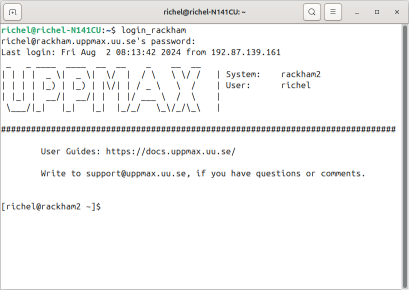

Log in and other preparations¶
Learning outcomes
This is an optional session. If you have done all three steps, see you at 10:00 sharp!
Be able to follow this course:
- Step 1: You have fulfilled the prerequisites (you have already done this)
- Step 2a: You can log in (see below) (this session)
- Step 2b: You can use a text editor on your HPC cluster (this session)
- (optional) Step 3: Use the tarball with exercises. This step is optional, as we also do this under course time
Note
- You were invited to be part of the course project.
- If you already have research projects in any of the clusters you can use them. The CPU-hours required during the course will be low!
Step 1: Log in¶
For beginners: use the bold login method.
| HPC cluster | Login method | Documentation | YouTube video |
|---|---|---|---|
| Alvis | SSH | Documentation | YouTube video |
| Alvis | Website | Documentation | YouTube video |
| Bianca | SSH | Documentation | YouTube video |
| Bianca | Website | Documentation | YouTube video |
| COSMOS | Local ThinLinc client | Documentation | YouTube video |
| COSMOS | SSH | Documentation | YouTube video |
| Dardel | Local ThinLinc client | Documentation | YouTube video |
| Dardel | SSH | Documentation | YouTube video |
| Kebnekaise | Local ThinLinc client | Documentation | YouTube video |
| Kebnekaise | SSH | Documentation | YouTube video |
| Kebnekaise | Website | Documentation | YouTube video |
| LUMI | SSH | Documentation | YouTube video |
| Pelle | SSH | Documentation | YouTube video |
| Pelle | Local ThinLinc client | Documentation | YouTube video |
| Rackham | Local ThinLinc client | Documentation | YouTube video |
| Rackham | SSH | Documentation | YouTube video |
| Rackham | Website | Documentation | YouTube video |
| Tetralith | Local ThinLinc client | Documentation | YouTube video |
| Tetralith | SSH | Documentation | YouTube video |
What are the differences between these login methods?
These are the ways to access your HPC cluster and some of their features:
| How it looks like | How to access your HPC cluster | Features |
|---|---|---|
 |
Remote desktop via a website | Familiar remote desktop, clumsy, clunky, no need to install software, not available at all centers |
 |
Remote desktop via a local ThinLinc client | Familiar remote desktop, clumsy, need to install ThinLinc |
|  | Console environment using an SSH client | A console environment, powerful, need to install an SSH client |
Step 2: Make a work directory¶
- Directory names OK?
-
Create a working directory where you can code along.
- Example. If your username is jlpicard and you are at NSC, then we recommend you create this folder:
-
Create a working directory where you can code along.
- Example. If your username is sevenof9 and you are at PDC, then we recommend you create this folder:
-
Create a working directory where you can code along.
- Example. If your username is sevenof9 and you are at Alvis at C3SE, then we recommend you create this folder:
-
Create a working directory where you can code along.
- Example. If your username is “mrspock” and you are at UPPMAX,
then we recommend you create this folder:
``` console
mkdir /proj/r-matlab-julia-pelle/mrspock/
```
-
Create a working directory where you can code along.
- Example. If your username is bbrydsoe and you are at HPC2N, then we recommend you create this folder:
Test an editor¶
Learn how to use an text editor at Use a text editor.
Download and extract the tarball with exercises¶
Learn how to download and extract the tarball with exercises at Use the tarball with exercises.